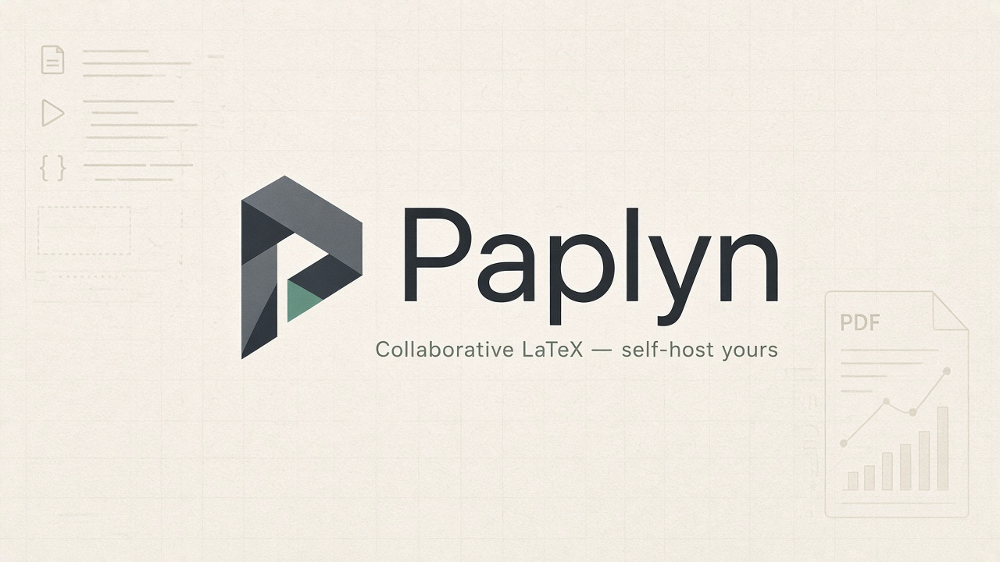

Multi-file editor
CodeMirror 6 with syntax highlighting, autocomplete, search, go-to-line, and word count across your project tree.

Write, compile, and share research documents in real time. Run Paplyn on your own infrastructure with Docker — always free, fully open source.
There is no hosted cloud. Paplyn is self-hosted only — you run your own instance on your server or laptop. No VPS subscription from us, no managed SaaS.
A full manuscript studio in one stack: editor, compiler, collaboration, and optional AI — designed for researchers and students.
CodeMirror 6 with syntax highlighting, autocomplete, search, go-to-line, and word count across your project tree.
pdfLaTeX, XeLaTeX, or LuaLaTeX with BibTeX/Biber passes, compile logs, and jump-to-error diagnostics.
Yjs shared editing with presence indicators, email invites, and room state persisted to PostgreSQL.
Optional OpenAI-compatible provider for drafting, fixing compile errors, and literature search — bring your own API key.
Click in the PDF preview to jump to the matching source line, and navigate back from source to PDF.
Start from blank article, IEEE conference, thesis chapter, or Beamer slides — plus Overleaf-style zip import.
Own your toolchain, your data, and your collaboration stack.
Clone the repository, configure secrets, and start the stack. The first registered user becomes admin.
See Configuration for every environment variable, API key, and production URL.
git clone https://github.com/amine0110/paplyn.git
cd paplyn
cp .env.example .env
# Set BETTER_AUTH_SECRET, COLLAB_SECRET, and URLs — see configuration guide
docker compose up --buildPaplyn lives on GitHub. Star or fork the repository, read the configuration guide, and deploy on your terms.